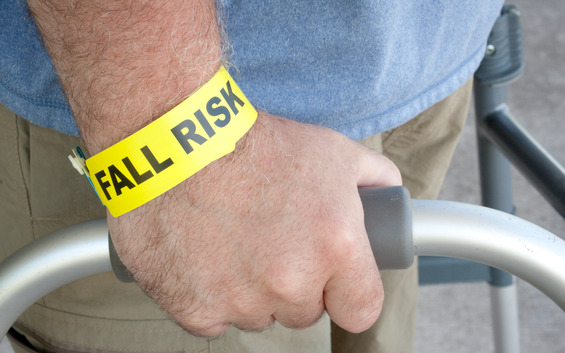
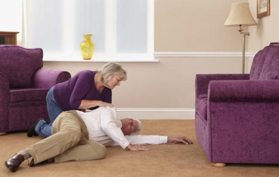
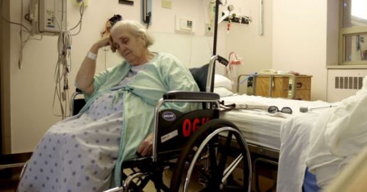
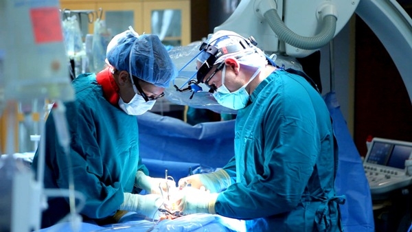
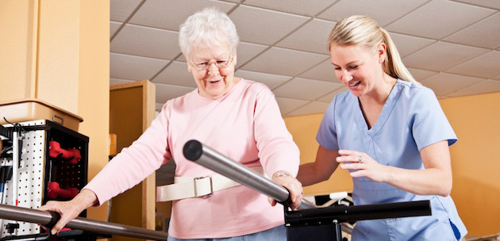
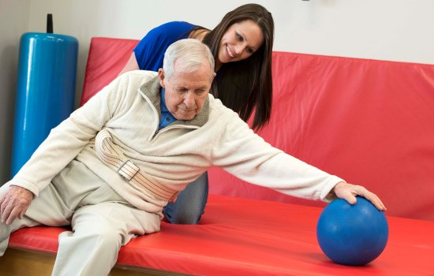

Перелом шейки бедра – это серьезная травма, которая практически всегда оставляет неприятные последствия для здоровья человека.
Этот вид перелома чаще всего встречается у людей пожилого возраста. Это в основном связано с тем, что с возрастом у людей уменьшается содержание кальция в костях, развивается остеопороз, кости становятся хрупкими.
Причины
- Падение человека на область большого вертела;
- Падение на отведенную ногу;
- Сильный удар по бедру;
- Дорожно-транспортные происшествия;
- Завалы (например, в шахтах).
Факторы риска:
- Плохое зрение;
- Заболевания головного мозга;
- Злокачественные опухоли;
- Деменция;
- Заболевания центральной нервной системы;
- Ожирение;
- Туберкулез;
- Гормональные нарушения;
- Малоподвижный образ жизни;
- Женщины в период менопаузы;
- Неправильное питание;
- Нарушение координации движений;
- Сосудистые заболевания;
- Употребление некоторых лекарственных препаратов, наркотиков и алкоголя;
- Общая астенизация человека.
Особенности этого вида перелома состоят в том, что у человека шейка бедра располагается практически внутри тазобедренного сустава и сверху не покрыта надкостницей.
При переломах в области шейки бедра у пострадавшего очень часто происходит повреждение кровеносных сосудов, которые обеспечивают питание головки бедренной кости, а также мелких сосудов проходящих в синовиальной оболочке и внутрикостных сосудов.

У большинства людей питание головки бедренной кости осуществляется за счет за счет кровеносных сосудов ее связки, которые у пожилых людей облитерируются. Учитывая эти факты, для сращения перелома шейки бедра требуется длительное время и обездвиживание пациента.
Особенности вколоченного перелома
При вколоченном переломе происходит нахождение костных отломков и последующее вклинивание вдруг друга. Один фрагмент кости вклинивается в другой. Эта травма является вальгусной, потому что после перелома головка бедренной кости смещается кнаружи и вверх. У пострадавшего увеличивается угол между костным телом и шейкой. Кровоснабжение головки бедра после травмы не сильно нарушено.
После полученного перелома человек может передвигаться некоторое время, даже не подозревая, что у него случился перелом кости. Но, как правило, с течением времени при физической нагрузке этот перелом может видоизменяться в обычный перелом, который требуется серьезного лечения и реабилитации.
Симптомы
При вколоченном переломе шейки бедренной кости у пострадавшего в первые часы или дни после травмы могут отсутствовать «классические» симптомы перелома костей: нарушение двигательной функции нижней конечности, наружная ротация ноги, укорочение ноги, сильная боль, гематома и так далее.
Клиническая картина несколько «смазана» и человек после травмы чаще всего жалуется на боль в паховой области. Однако эти болевые ощущения при этом виде перелома выражены не сильно, и поэтому больной не спешит обращаться за медицинской помощью.
Но через несколько дней после физической нагрузки (ходьбы или бега) костные отломки «расколачиваются» и становятся разобщенными. Только после этого у человека появляется боль не только в области паха, но и при осевой нагрузке на ногу. Так, например если врач надавит на пятку или немного постучит по ней молоточком — появляется болезненность в верхней части бедра.

Как распознать перелом шейки бедра?
В травматологии существует шесть достоверных симптомов перелома шейки бедра:
- Нарушение движений. Пострадавшему трудно передвигаться, он не может опереться на поврежденную ногу;
- Нерезкая боль в паху. У пациента в паховой области болевые ощущения не резко выражены, они возникают, как правило, при физической нагрузке на ногу. В состоянии покоя боль может отсутствовать. При развитии смещения фрагментов костей болевой синдром усиливается;
- Поворот травмированной ноги в сторону. При вколоченном переломе шейки бедра у пострадавшего наблюдается характерное положение ноги – если человек лежит на спине, то травмированная нога будет вывернута наружу. Однако при вколоченных переломах у пострадавшего наружная ротация поврежденной ноги не выражена и больной по просьбе врача может поднять выпрямленную ногу (отсутствует симптом «прилипшей пятки»);
- Появление боли при осевой нагрузке. При попытке пострадавшего наступить на пятку стопы — возникает боль в верхней части бедра;
- Укорочение ноги. На рентгене у пострадавшего уменьшается расстояние между головкой и телом бедренной кости;
- Появление гематом. У больного через несколько дней после травмы появляются гематомы в паховой области.
Диагностика
- Анамнез;
- Жалобы;
- Данные объективного осмотра пациента;
- Дополнительные методы обследования.
Окончательный диагноз врач устанавливает только после рентгенологического обследования тазобедренного сустава в двух проекциях.
Первая помощь
- Врач «Скорой помощи» должен успокоить пострадавшего;
- Необходимо освободить травмированную ногу от стесняющей одежды (например, аккуратно разрезать ножницами по шву;
- Обезболивание (еслиу пострадавшего выражен болевой синдром после перелома, то применяются ненаркотические анальгетики и кетарол);
- Если у человека имеется раневая поверхность на бедре, то врач должен обработать ее йодом или спиртом и наложить стерильную повязку;
- Транспортная иммобилизация осуществляется при помощи шины Дитрихса;
- Врач «Скорой помощи» должен доставить пострадавшего на носилках в положении лежа в травматологическое отделение стационара.

Лечение
Выбор тактики лечения зависит от общего состояния больного, вида перелома и наличия сопутствующей патологии
Виды лечения вколоченного перелома шейки бедра:
- Консервативное;
- Оперативное.
Консервативное лечение
Если у пострадавшего диагностирован вколоченный перелом шейки бедра, то его укладывают на койку со щитом на 3 недели. Травмированную ногу помещают на лечебную шину Беллера, а затем накладывают скелетное вытяжение с грузом 3 кг. После этого проводят повторное рентгенологическое обследование.
Если на рентгенологическом снимке врач видит достаточно прочное вклинение костных отломков, то больному разрешается ходить при помощи костылей, но не опираться на поврежденную нижнюю конечность.
На ногу накладывается гипсовая лангета, которая доходит до коленного сустава, а в некоторых случаях надевается деротационный сапожок, который фиксирует стопу. Травматолог разрешает давать постепенную нагрузку на ногу только через 5-7 месяцев. Ранняя нагрузка на нижнюю конечность может привести к расклинению костных отломков и их смещению.
Оперативное лечение
При невколоченном переломе или при расклинении костных отломков больному показана операция остеосинтеза.
Противопоказания к оперативному вмешательству у пожилых пациентов является:
- Состояние старческого маразма;
- Крайне тяжелое состояние больного;
- Тяжелые хронические заболевания.
Преимущества оперативного лечения перелома шейки бедра:
- Предупреждение тяжелых осложнений;
- Ранняя активизация больного;
- Профилактика пролежней.

Основные задачи оперативного лечения:
- Позволяет точно сопоставить костные отломки;
- В ходе операции хирург может прочно фиксировать отломки при помощи спиц и пластин;
- Операция позволяет перевести невколоченный перелом во вколоченный.
Операция остеосинтеза шейки бедра может выполняться двумя способами:
- Закрытый;
- Открытый.
При закрытом способе остеосинтеза у пациента на операционном столе проводится несколько рентгенологических снимков. Этот способ не сопровождается дополнительной травмой костей и тканей, сильной кровопотерей и вскрытием тазобедренного сустава.
При открытом способе в ходе операции у больного в операционной ране обнажается тазобедренный сустав и под контролем глаза в костный отломок хирург вводит гвоздь. Однако этот способ оперативного лечения применяется достаточно редко, так как он плохо переносится больным и, как правило, сопровождается значительным повреждением мягких тканей.
У пожилых людей старше 60 лет замедлены восстановительные процессы в организме, поэтому, как правило, им проводится оперативное лечение с эндопротезированием сустава.
Осложнения перелома:
- Некроз бедренной кости;
- Тромбоз глубоких и поверхностных вен нижней конечности;
- Артрит;
- Артроз;
- Остеомиелит;
- Нарушение двигательной функции ноги;
- Укорочение или деформация нижней конечности;
- Развитие ложного сустава;
- Асептический некроз головки бедра.
Реабилитация
- Лечебная физкультура;
- Полноценное питание;
- Физиопроцедуры;
- Массаж;
- Ношение ортеза.

Диета при переломе
В периоде реабилитации пациент должен получать полноценное питание, которое обогащено витаминами и содержит большое количество кальция(творог, молоко, сыры, кефир, яйца). Людям пожилого возраста и женщинам в постлимактерическом периоде врач назначает таблетированные препараты кальция (например, «Кальций-Д3-Никомед») и хондропротекторы.
Пациент должен следить за массой тела и употреблять в небольшом количестве хлебобулочные изделия, сладкое и жирные продукты.
Основные задачи лечебной гимнастики при вколоченных переломах:
- Выведение пациента из угнетенного состояния;
- Восстановление кровообращения в поврежденной ноге;
- Способствует более быстрому рассасыванию гематомы;
- Профилактика атрофии мышц;
- Восстановление мышечного тонуса;
- Улучшают венозный отток;
- Ускорение процессов регенерации в поврежденных тканях;
- Улучшение работы внутренних органов и систем организма.
В первом периоде реабилитации пациент в постели может выполнять дыхательные упражнения, сгибание и разгибание пальцев, а также различные движения в голеностопном и коленном суставах.
Во втором периоде реабилитации больной должен при помощи врача-реабилитолога научиться ходить на костылях. После того как он почувствует себя уверенно, сможет спускаться и подниматься по лестнице при помощи костылей, можно перейти на один костыль или бадик.
У многих пациентов после перелома в области шейки бедра травмированная нога становится несколько короче, чем здоровая. В этом случае больной может пользоваться специальными ортопедическими стельками.
Основные задачи второго периода реабилитации:
- Врач должен обучить пациента ходьбе с опорой;
- Укрепление мышц поврежденной нижней конечности;
- Восстановление объема движений во всех суставах поврежденной ноги;
- Выработка устойчивости;
- Пациент должен научиться координировать свои движения и удерживать равновесие;
- Обучение ходьбе по коридору и по лестнице.
Средняя продолжительность второго периода 1-2 месяца.

Основные задачи третьего периода реабилитации:
- Тренировка ходьбы без опоры;
- Полное восстановление физиологической функции нижней конечности.
Вопрос о спортивных тренировках и беге с каждым пациентом врач решает индивидуально.
Хорошо восстанавливают функцию травмированной ноги занятия в бассейне и плавание.
Из физиотерапевтических методов реабилитации рекомендуется высокочастотная и низкочастотная электротерапия, магнитотерапия; лазер. Физиотерапевтические процедуры и массаж назначаются курсами. У пожилых пациентов количество процедур или время сеанса может быть сокращено.
Область перелома можно аккуратно растирать согревающими мазями, делать теплые ванночки и аппликации.
Ортез тазобедренный
- Применяется после оперативного вмешательства;
- Обеспечивает полную фиксацию тазобедренного сустава, но снабжен регулируемым объемом движений;
- Отводящий ортез фиксирует и стабилизирует тазобедренный сустав;
- Уменьшает болевой синдром;
- Способствует ранней активизации больного;
- Перераспределяет нагрузку с тазобедренного сустава;
- Точно подгоняется под фигуру больного;
- Удобен в использовании;
- Снабжен пластиковыми деталями;
- Ортез можно стирать.
Продолжительность периода реабилитации зависит от внутреннего настроя пациента на выздоровление и от его усилий.
Трудоспособность пациента обычно восстанавливается через 7-9 месяцев.